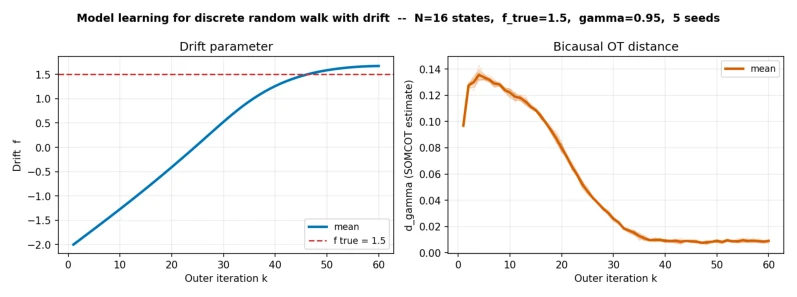
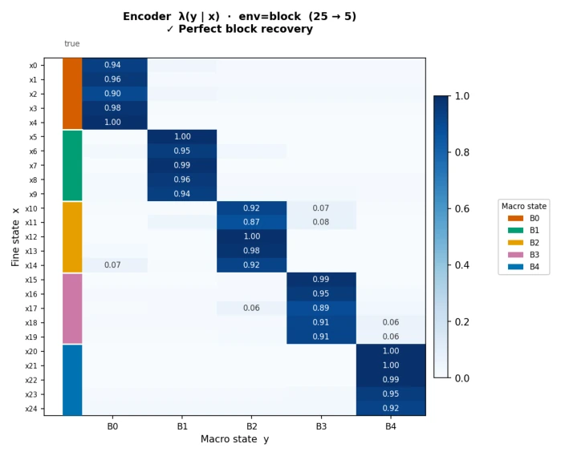
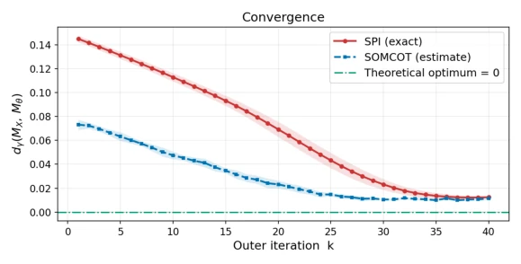
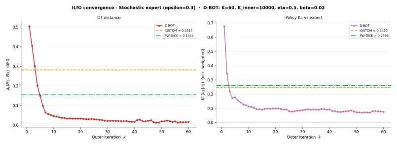
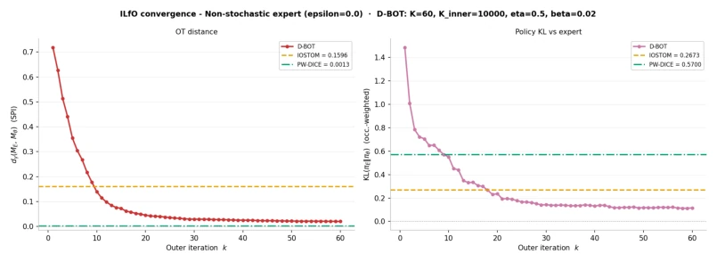
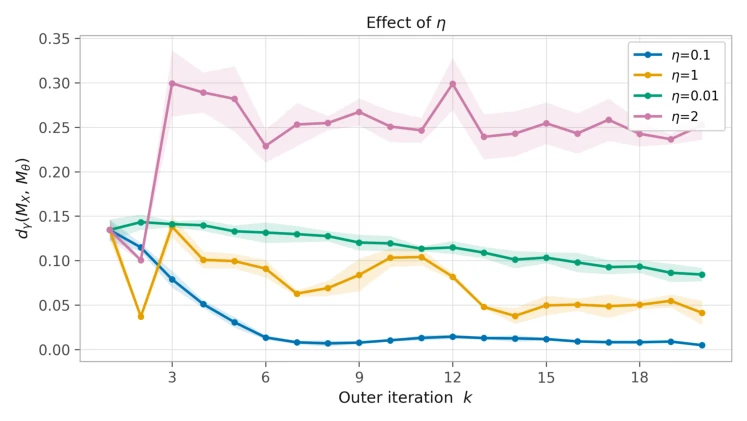
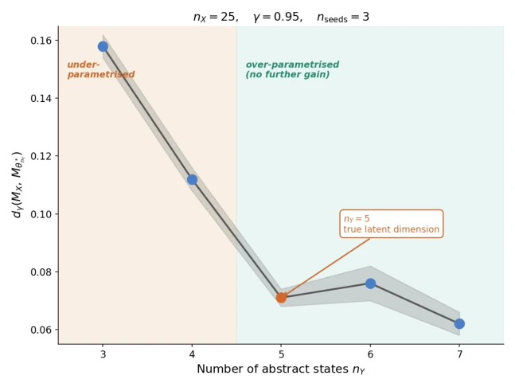

This paper attempts to use "Bicausal Optimal Transport" to uniformly solve three classic problems in reinforcement learning: state compression, model learning, and imitation learning from observations. The authors claim the Bisimulation Metric is differentiable and propose the D-BOT algorithm. The highlight lies in deriving closed-form gradients using the Envelope Theorem, avoiding complex inner optimization differentiation, which sounds elegant. However, to be blunt: this essentially transforms the problem into a saddle point problem of Linear Programming (LP); although the theoretical derivation is beautiful, the computational complexity is O(|X|^2|Y|^2), which is simply a disaster for large-scale state spaces. Moreover, gradient computation relies on SOMCOT convergence; early stopping introduces bias, which is a pitfall in practical engineering. Overall, the theoretical contribution is solid, but practical scalability is questionable; suitable for verification in small state spaces, do not expect direct deployment on robots.
研究动机Motivation
在序列决策中，定义两个随机过程“有多近”是个大坑。传统的基于边际状态占据分布的距离（如 KL 散度或普通 OT）无法区分行为模式相同但时序结构不同的策略，比如两个策略可能产生相同的状态分布，但转移逻辑完全不同（Kostrikov et al., 2020; Pham et al., 2025）。状态空间压缩和模型学习通常依赖 Bisimulation Metric，但以往缺乏可微的优化框架。现有工作往往各自为战，缺乏统一视角。本文旨在利用 Bisimulation Metric 等价于双因果最优传输（Bicausal OT）的特性，构建一个可微的拟合框架，解决上述问题在统一距离度量下的优化难题。
In sequential decision making, defining how "close" two stochastic processes are is a major pitfall. Traditional distances based on marginal state occupancy distributions (such as KL divergence or standard OT) cannot distinguish policies with the same behavioral patterns but different temporal structures, for example, two policies may produce the same state distribution but have completely different transition logic (Kostrikov et al., 2020; Pham et al., 2025). State space compression and model learning typically rely on the Bisimulation Metric, but previously lacked a differentiable optimization framework. Existing work often operates in isolation, lacking a unified perspective. This paper aims to utilize the property that the Bisimulation Metric is equivalent to Bicausal Optimal Transport (Bicausal OT) to construct a differentiable fitting framework, solving the optimization difficulties of the aforementioned problems under a unified distance metric.

Figure 1: Model learning (nY = nX = 16, ftrue = 1.5, γ = 0.95). Left: learned drift f versus outer iteration k; dashed red line marks the true value. Right: SOMCOT estimate of dγ(MX, Mθ).
The core of D-BOT is an alternating optimization framework. The outer layer updates model parameters θ, while the inner layer runs the SOMCOT algorithm to calculate the Bisimulation distance and corresponding dual variables (λ, α). The key innovation lies in using the Envelope Theorem to differentiate the LP saddle point, obtaining a closed-form gradient formula with respect to θ, without needing to differentiate the inner optimization process. Specifically divided into two types of implementations: for explicitly parameterized models (such as model learning, state compression), obtain the occupancy measure gradient by automatically differentiating and solving the linear system (I - γP^T)ρ = ν0; for implicit policies (such as ILfO), convert dual variables into implicit reward functions and update the policy using the policy gradient theorem. The algorithm flow is unified, the difference lies only in the calculation method of ∇θνθ. Furthermore, this method relies on the dual variables output by SOMCOT as fixed coefficients, thereby decoupling the complex inner optimization problem, making gradient computation depend only on the influence of outer parameters on the occupancy measure. In this way, D-BOT avoids the high cost of backpropagating through the entire optimization process in traditional methods, achieving efficient parameter updates.

Figure 5: Recovered soft encoder λX(y|x) at convergence on the block-chain environment (nX = 25, nY = 5, γ = 0.95). Rows correspond to original states x ∈X; columns to abstract states y ∈Y. The encoder assigns each group of five original states to a distinct abstract state, recovering the true block structure.
Experiments cover three scenarios. In model learning, the random walk drift parameter converges from incorrect initialization to the true value (Figure 1). The state compression task successfully compresses a 25-state chain into a 5-state abstract chain and recovers the soft encoder (Figure 2, 5). In the ILfO task, compared to IOSTOM and PW-DICE, D-BOT performs better when the expert policy is random (Figure 3, 4). Ablation studies show that abstract space size nY exceeding the true dimension does not reduce performance, but increases computational cost (Figure 7). Learning rate too large causes oscillation (Figure 6).

Figure 2: State-space compression (nX = 25, nY = 5, γ = 0.95): bisimulation distance dγ(MX, Mθ) versus outer iterations. The 5-state abstract chain faithfully represents the origi- nal 25-state chain.

Figure 3: ILfO results with a stochastic expert policy.

Figure 4: ILfO results with a deterministic expert policy.

Figure 6: Effect of the outer learning rate ηout on the convergence of D-BOT-COMPRESS (block- chain, nY = 5, γ = 0.95). Moderate values converge reliably; an excessively large rate introduces oscillations.

Figure 7: Effect of the abstract space size nY on compression quality (block-chain, nX = 25 = 5 × 5, true latent dim = 5, γ = 0.95). Left: Final bisimulation distance dγ(MX, Mθ∗) versus nY . The distance drops sharply from the under-parametrized regime (nY < 5) to the true latent dimension (nY = 5, orange marker), then remains flat as nY increases, this confirms that over-parametrization does not hurt the output.